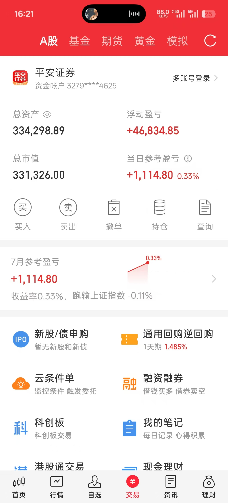
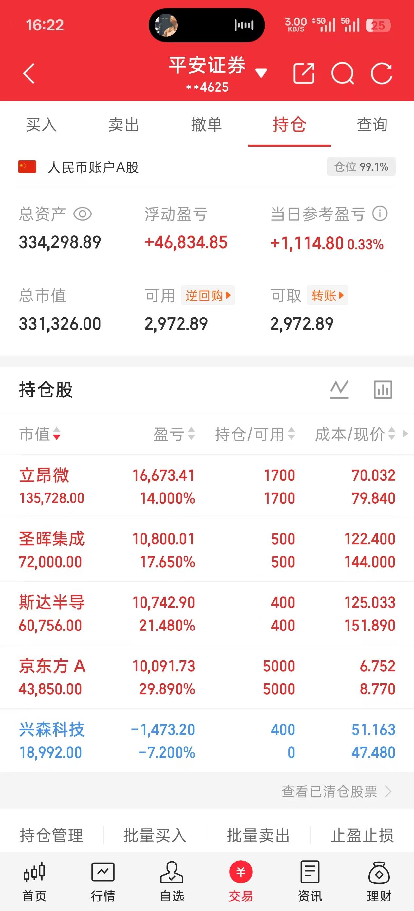
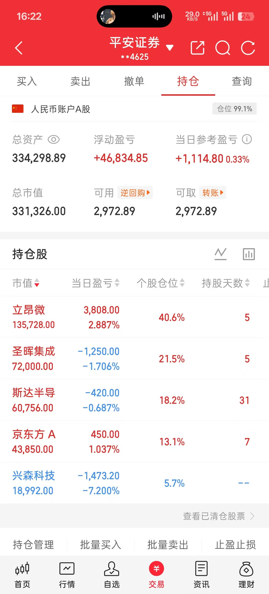

一、大盘概况：上证+0.44%收4112，保险养殖化工大涨，半导体冲高回落
今日是2026年下半年第一个交易日。上证指数微红+0.44%收4112点，盘中最高4143、最低4087，全天窄幅震荡。最大特征是板块大轮动：开盘半导体最强（主力+18亿），但10点后大金融（保险+7.09%、证券大涨）和养殖化工（氟化工+9.38%、猪肉+6.95%）异军突起，资金从半导体分流。半导体板块从早盘+18亿主力资金被抢到收盘，冲高回落明显。
| 指数 | 收盘 | 涨跌幅 | 特征 |
|---|---|---|---|
| 上证指数 | 4,112.45 | +0.44% | 微红横盘，保险证券托底 |
| 深证成指 | — | 待确认 | 科技分化 |
| 创业板指 | — | 待确认 | 成长股分化 |
| 科创50 | — | 待确认 | 冲高回落，2200关口博弈 |
🔥 板块涨幅榜（7月1日收盘）
| 板块 | 涨跌幅 | 驱动逻辑 |
|---|---|---|
| 氟化工 | +9.38% | 制冷剂涨价+供需紧张 |
| 快递 | +7.81% | 行业旺季预期 |
| 肉鸡养殖 | +7.56% | 养殖周期反转 |
| 保险Ⅲ | +7.09% | 利率预期+估值修复 |
| 氨纶 | +6.95% | 化纤涨价 |
| 养殖业 | +6.70% | 生猪价格反弹 |
| 防水材料 | +6.64% | 基建预期 |
| 化学制药 | +5.57% | 创新药回暖 |
💡 核心判断：今天不是半导体崩了，是钱太多了，分流了。开盘半导体设备板块主力净流入+18亿全市场第一，但保险、养殖、化工、证券四大方向同时爆发，资金从半导体抽血。半导体设备收盘仍保持净流入，但增量资金被抢走，导致冲高回落。这是典型的普涨格局下的板块轮动，不是半导体行情结束。
昨日回顾（6月30日）
上证+0.20%收4082，科创50暴涨+3.51%站上2200创历史新高 半导体+军工双主线，斯达半导涨停+10% 主力资金净流入近400亿，科技赛道全面爆发 涨停89只，跌停仅3只，恐慌大幅消退
昨天（6/30）是半年末收官，科创50创历史新高、主力资金大幅回流。今天是下半年第一个交易日，资金不再集中在半导体单一方向，而是向保险、养殖、化工扩散。这不是坏事——普涨格局比单一主线独木难支更健康。
二、黄金复盘：伦敦金低位震荡，半年回撤超28%
🥇 2026年7月1日黄金行情
| 品种 | 价格 | 涨跌幅 | 说明 |
|---|---|---|---|
| 伦敦金现 | 4,025.87 美元/盎司 | +0.29% | 小幅反弹，仍在低位 |
| COMEX黄金 | 4,021.80 美元/盎司 | 微涨 | 期货同步低位震荡 |
| 沪金主力 | 880.84 元/克 | 微涨 | 国内期货跟涨 |
| 黄金T+D | 878.74 元/克 | 微涨 | 上海金交所现货 |
| 品牌金饰 | 1,206-1,213 元/克 | 继续下调 | 老凤祥等品牌零售价 |
📉 半年走势回顾
- 年初高点：1月29日伦敦金触及 5,598美元/盎司 历史峰值
- 半年跌幅：从5598跌到最低3943美元，最大回撤超 28%
- 6月收官：6月30日盘中跌破3950美元，为2025年11月以来首次
- 当前位置：4025美元附近，在3940-4100区间反复震荡
🔍 下跌原因
- 美联储偏鹰：6月点阵图显示降息预期推迟，利率维持高位打压黄金
- 美元走强：美元指数反弹，黄金承压
- 风险偏好回升：全球股市走强（A股科创50创历史新高），避险资金流出黄金
- 获利了结：年初5598高位大量获利盘出逃
🎯 后市判断
4000美元是关键心理关口。6月30日盘中跌破3950后空头回补反弹，说明4000以下有买盘承接。但周线四连阴，趋势偏弱。短期关注：① 4000美元能否守住；② 美联储7月议息会议；③ 地缘政治事件。中长期看，黄金仍是对冲货币超发的重要工具，但短期需等待企稳信号。
三、个人持仓分析：立昂微+2.89%领涨，兴森科技-7.20%首日吃面
📱 实盘截图



📊 持仓一览（7月1日收盘）
| 股票 | 持仓 | 成本价 | 收盘价 | 浮动盈亏 | 盈亏比例 | 当日盈亏 | 个股仓位 |
|---|---|---|---|---|---|---|---|
| 立昂微 | 1700股 | 70.032 | 79.84 | +16,673 | +14.00% | +3,808 | 40.6% |
| 圣晖集成 | 500股 | 122.400 | 144.00 | +10,800 | +17.65% | -1,250 | 21.5% |
| 斯达半导 | 400股 | 125.033 | 151.89 | +10,743 | +21.48% | -420 | 18.2% |
| 京东方A | 5000股 | 6.752 | 8.77 | +10,091 | +29.89% | +450 | 13.1% |
| 兴森科技 | — | 51.16 | 47.48 | -1,473 | -7.20% | -1,473 | 5.7% |
📊 当日战绩（7月1日）
总资产：334,298.89 元
当日盈亏：+1,114.80 元（+0.33%）
浮动盈亏：+46,834.85 元
仓位：99.1%（几乎满仓）
相对上证指数：跑输 -0.11%
总资产：334,298.89 元
当日盈亏：+1,114.80 元（+0.33%）
浮动盈亏：+46,834.85 元
仓位：99.1%（几乎满仓）
相对上证指数：跑输 -0.11%
逐只分析
1. 立昂微（605358）— 🏆 +2.89%，今日最强
- 今日走势：开盘77.61 → 冲高83.29（+7.3%！） → 回落收盘79.84（+2.89%）
- 日内振幅：76.45→83.29，振幅近9%，冲高回落
- 量能：102万手，成交额81.4亿，交投活跃
- 核心逻辑：今日涨价正式生效！早盘冲到+7.3%说明市场认可涨价逻辑。午后跟随半导体板块回落，属于板块联动而非个股问题
- 关键认知：9:43主力资金显示-9994万（以为是出货），10:29翻转为+622万——开盘30分钟是机构洗盘
- 判断：涨价逻辑已兑现，今日从高点83.29回落至79.84，短线获利盘在消化。但涨价是业绩实质性利好，不是一次性事件。继续持有
2. 京东方A（000725）— V型反弹+1.04%收红
- 今日走势：开盘8.49 → 最低砸到8.31（-4%） → V型反弹至8.77（+1.04%）
- 日内振幅：8.31→8.81，振幅6%，V型反转确认
- 量能：4625万手，成交额396亿，放量反弹
- 主力资金：+576万净流入，低位承接明显
- 判断：从-4%拉到+1.04%，回血5个点。主力在低位吸筹，反弹趋势确认。继续持有
3. 斯达半导（603290）— 小幅回调-0.69%
- 今日走势：开盘155.00 → 最高159.69 → 最低149.61 → 收盘151.89
- 日内振幅：149.61→159.69，振幅6.59%，高位震荡
- 量能：22.2万手，成交额34.4亿，正常换手
- 主力资金：微幅流出，但无恐慌抛售
- 判断：昨日涨停+10%后，今日-0.69%正常回调。从最低149.61拉回151.89，下方有承接。趋势未破，继续持有
4. 圣晖集成（603163）— 继续整理-1.71%
- 今日走势：开盘148.00 → 最低141.57 → 收盘144.00（除权价）
- 日内振幅：141.57→148.00，缩量整理
- 量能：5.58万手，较前日缩量，抛压减弱
- 主力资金：+531万净流入，低位吸筹
- 判断：三连板后第三天整理，缩量回调+主力净流入=调整近尾声。逻辑不变：洁净室龙头+半导体扩产需求。基本面逻辑没变，继续持有
5. 兴森科技（002436）— 🔴 -7.20%，首日吃面
- 今日走势：成本51.16买入 → 开盘53.24 → 一路砸到最低46.82 → 收盘47.48
- 日内跌幅：-7.20%，从最高53.24到最低46.82，日内回撤超12%
- 量能：156万手，成交额77.6亿，放量下跌
- 核心原因：三个月暴涨+160%（20→53），获利盘巨大；39亿定增稀释+抽血效应；今日板块轮动半导体冲高回落，高位票首当其冲
- 基本面：PCB龙头+IC封装基板放量+扭亏为盈，基本面不差。但PE 113倍、三个月+160%，位置太高
- 判断：今日买入后被T+1锁住无法操作。跌破49元止损线，明日开盘执行纪律。明日开盘止损
⚠️ 兴森科技教训：
1. 不要在暴涨后追高：三个月+160%的票，回调风险极大
2. 高位定增是警示信号：39亿定增=稀释+抽血
3. T+1买入需谨慎：买入当天无法止损，遇到暴跌只能看着
4. 仓位控制：幸好只买了5.7%仓位，亏损可控
1. 不要在暴涨后追高：三个月+160%的票，回调风险极大
2. 高位定增是警示信号：39亿定增=稀释+抽血
3. T+1买入需谨慎：买入当天无法止损，遇到暴跌只能看着
4. 仓位控制：幸好只买了5.7%仓位，亏损可控
四、交易心理复盘：从恐慌到贪婪的一天
🧠 7月1日心理历程（关键时间线）
| 时间 | 事件 | 情绪 | 认知偏差 |
|---|---|---|---|
| 9:30 | 开盘，立昂微冲高，半导体板块+18亿 | 兴奋 | 近因效应：把开盘强势当作全天趋势 |
| 10:00 | 买入兴森科技，追高入场 | 乐观 | 贪婪：看到基本面好就冲动买入 |
| 10:30 | 半导体冲高回落，大金融崛起分流资金 | 疑惑 | 控制幻觉：以为盯盘能控制走势 |
| 10:45 | 斯达半导转绿，五只票四绿一红 | 恐慌 | 损失厌恶：亏损的痛苦放大 |
| 10:48 | 接受躺平，不再操作 | 平静 | 接受「控制不了」 |
| 11:03 | 了解兴森基本面后：「未来几百块也有可能」 | 过度乐观 | 贪婪反弹：恐慌和贪婪是同一枚硬币的两面 |
| 11:07 | 兴森跌破49元止损线 | 焦虑 | 近因效应：把今天的结果当作最终结果 |
| 16:20 | 收盘复盘 | 接受 | 纪律：破了就执行，不纠结 |
📖 今日验证的认知笔记
- 开盘30分钟资金流向会骗人——立昂微9:43显示主力-9994万，10:29翻转为+622万，是洗盘不是出货
- 板块轮动不是半导体崩了——资金去了保险养殖化工，不是跑了，是分流了
- 逻辑没变≠股价每天涨——圣晖集成三连板后整理第三天，是获利回吐不是逻辑坏了
- 恐慌是生理反应，不是卖出信号——10:45恐慌想卖，检查框架后决定不操作，四只未触发卖出条件
- 「感觉贵了」卖飞 vs「跌了恐慌」割肉——是同一个认知偏差的两面，都用情绪而非逻辑驱动
五、明日关注（7月2日 · 周四）
| 关注点 | 分析 |
|---|---|
| 🔴 兴森科技止损执行 | 今日收盘47.48跌破49止损线。明日开盘执行止损纪律。不纠结、不犹豫、不幻想反弹 |
| 立昂微涨价后走势 | 涨价首日冲高回落，关注明日是否企稳。涨价是业绩实质利好，非一次性事件 |
| 半导体板块能否企稳 | 今日冲高回落是被金融养殖抽血，关注明日资金是否回流半导体 |
| 京东方A反弹延续 | 今日V型反弹+1.04%，关注明日能否站稳8.7以上 |
| 圣晖集成调整结束 | 缩量+主力净流入，调整第三天，关注是否企稳回升 |
| 黄金4000关口 | 伦敦金4000美元能否守住？周线四连阴后是否反弹？ |
关键位置
| 股票 | 支撑 | 压力 | 策略 |
|---|---|---|---|
| 立昂微 | 76.45（今日最低） | 83.29（今日最高） | 持有，涨价逻辑已兑现，看企稳 |
| 斯达半导 | 149.61（今日最低） | 159.69（今日最高） | 持有，正常回调 |
| 京东方A | 8.31（今日最低） | 8.81（今日最高） | 持有，V型反弹确认 |
| 圣晖集成 | 141.57（今日最低） | 148.00（今日开盘） | 持有，缩量调整近尾声 |
| 兴森科技 | — | — | 🔴 明日开盘止损 |
六、总结：小步前进，纪律第一
今日是下半年第一个交易日，账户+0.33%微红。虽然跑输上证-0.11%，但核心持仓（立昂微、斯达半导、京东方A、圣晖集成）逻辑完好，只有兴森科技因追高首日吃面。
最大收获：不是赚了1114块，而是今天在恐慌中没有操作其他四只票。10:45四绿一红时如果恐慌清仓，今天就全卖飞了。这验证了「用框架而非情绪做决策」的有效性。
最大教训：兴森科技追高买入。三个月+160%的票，定增39亿抽血，T+1无法止损——这是可以避免的错误。好在仓位仅5.7%，亏损可控。
明天最重要的事：兴森科技开盘止损，执行纪律。其余四只继续持有，逻辑没变就不动。
下半年开局，方向是对的，节奏需要优化。
数据来源：东方财富实时行情数据 + 网络公开信息 + 个人持仓截图 · 2026年7月1日 16:30